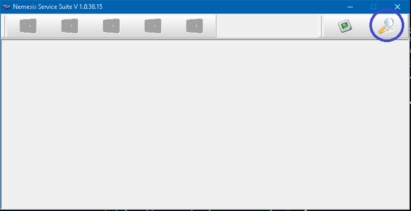
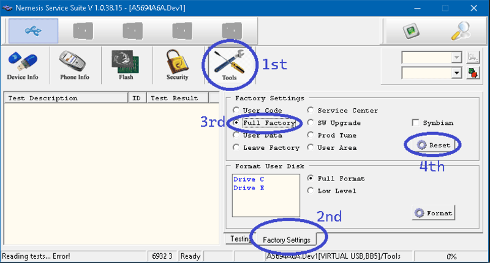

NOKIA PASSWORD RESET GUIDE
Y'all might know that 'oh man!' moment:
You found your old Nokia; It turns on; Then: ENTER PASSWORD
Enter a password you don't know anymore!
In this article I'm going to show 2 ways to get to your data on that phone.
All required software can be downloaded directly from the bottom of the page.
BEFOREHAND - Try some default passwords
Enter usual combinations:12345
00000
1122
1234
0000
Birthdate in following patterns: YYYY, DDMM, DDMMYY, DDMMYYYY, MMDD, MMDDYY . . .
METHOD 1 - Using the Nokia BB5 Utility (no data loss)
This Method requires a data cable (eg. CA-53, Micro-USB, etc.) to work. Might not work on some models, so try Method 2.Step 1: Download - Install - Open the 'Nokia BB5 Utility'.
Step 2: Connect your phone in PC Suite-Mode to the PC.
Step 3: Select 'Read Security Code' in the Drop-Down-Menu.
Step 4: Hit 'DO JOB'.

Step 5: Enter the given code on your Nokia.
METHOD 2 - Using 'Nemesis Service Suite' (some data lost)
Step 1: Download - Install - Open 'Nemesis Service Suite'.Step 2: Connect your phone in PC Suite-Mode to the PC.
Step 3: Hit the button with the magnifying glass-icon.

Step 4: Some more stuff appeared! Hit the buttons in following order:
Phone Info - Actions: Scan - Power Mode: Local - Power Mode: Change

If you encouter errors ( This program costs a lot of nerve. )
you have to restart the app, reconnect your phone and then redo Step 4. ( Sometimes you have to reboot to fix errors. )
If everything went sucessful, your Nokia should have restarted and now be in Localmode.

Restart your PC quickly, reopen and reconnect everything and hit the magnifying glass again.
Step 5: Hit the buttons in following order: Read - Activate Enable - Write

Step 6: Navigate to 'Tools' > 'Factory Settings'. There you select 'Full Factory' and hit 'Reset'.
DISCLAIMER: This DOES DELETE Some Stuff like settings, but some data, e.g. Images will STAY on the Mass Storage, DEPENDING YOUR DEVICE.

After that the phone should reboot, prompt you with country selection and date/time settings.
The password is now resetted.
Download the resources here:
Download Nokia PC Suite
Download Nokia BB5 Utility
Download Nemesis Service Suite
© 2025 Christian Schlei